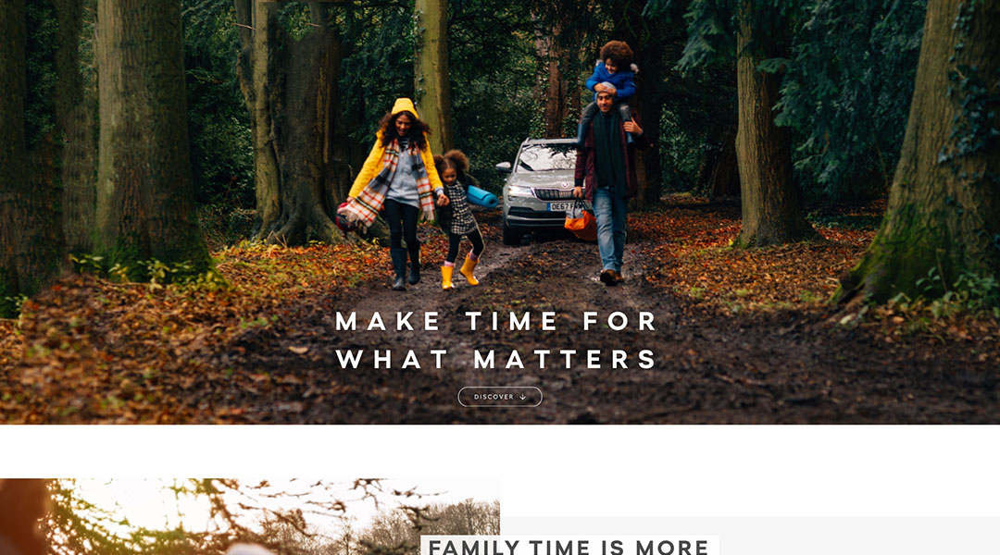

I'm a commercially aware self taught web developer with six years experience, including four on a leading automotive multi-million pound account within an agency.
ŠKODA UK
Working as Lead Front End Developer on ŠKODA account and a variety of other campaigns.
Read moreOOSC

Established 2014, OOSC (The Original Oldschool Ski Company) is the creative collaboration of a few friends from London and Verbier.
Read moreŠKODA Pattern Library

A fully responsive set of reviewed and tested webparts that can be used across the seperate desktop and mobile ŠKODA platforms.
Read moreŠKODA Karoq Model Page
After having the ŠKODA account for over 7 years, without an official style guide, I co-steered a change, to build an atomic pattern library with reusable webparts that could be rolled out on the site at short notice.
Read moreIpswich Town FC

With a dramatic change in retail in recent years, Ipswich FC acknowledged they needed a revamp in their website. I worked mostly on the product and account pages.
Read moreŠKODA Alternative Rich List
The Alternative Rich List features in The Sunday Times. It highlights indivduals who are motivated by more than money by showing people that live the true values of the ŠKODA brand.
Read moreŠKODA Cycling

ŠKODA has its roots in cycling, they sponsor many of the World’s biggest cycling events. The ŠKODA website plays an important part in supporting the cycling sub-brand through visual identity, content and competition entry.
Read moreŠKODA Paloma Faith Campaign
ŠKODA is Driven By Something Different and celebrates individuals like Paloma Faith who share this attitude - independently minded people who are confident in their own skin and want to make a positive impact on the world around them.
Read more